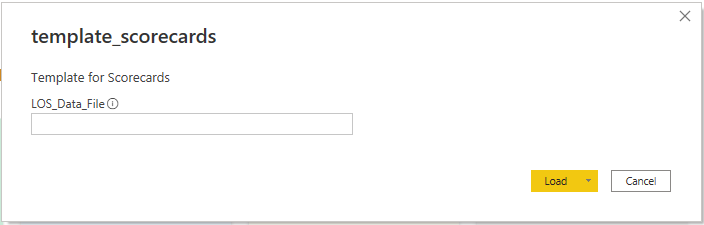
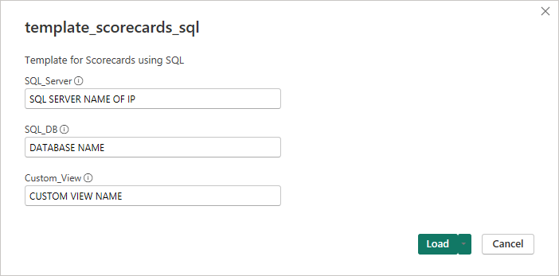
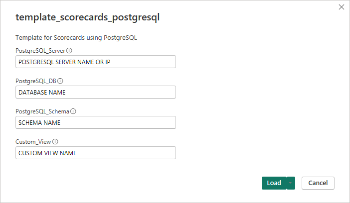

Scorecards
This report was designed to give insight into loans that have funded for the date range selected in the report. My hope is that this report will act as a starting point to build out Scorecards that works best for your company.
Dataset
Before opening the template, please ensure that you have prepared either an Excel worksheet, a Microsoft SQL (MSSQL) Custom View, or a PostgreSQL Custom View to serve as the dataset, depending on the template you intend to use. Verify that the fields are named precisely as listed in the 'Field Name' column below. If Excel is your dataset, confirm that the sheet containing the relevant data is named Data.
Field Information
All these fields must be part of the dataset, if one of the fields listed is not something that is currently in your LOS then it is alright to use the same data point for the column. Example, if you don't have a field for your Branch name, then it would be ok to reuse the same field this is used for ORGID as the Branch data.
| Field Name | Field Description |
|---|---|
| ORGID | Field used to group loans based on branch number or Cost Center |
| Branch | Field used for the name of the Branch |
| GUID | Unique identifier on a per loan bases |
| Total Loan Amount | The full loan amount |
| Funding Date | The date the loan was funded |
| Application Date | The date that a loan is considered an application |
| Credit Received Date | The date that credit was pulled |
| Decisioned Date | The date that the loan was decisioned |
| Docs Sent | The date that closing documents were sent |
| Docs Signed | The date that the closing documents were signed |
| File Started Date | The date that the loan file was started |
| Lock Date | The date that the loan was locked |
| Sent to Closer | The date the loan was sent to closing |
| Sent to Processing | The date the loan was sent to processing |
| Submitted to Underwriting | The date the loan was submitted to underwriting |
| Loan Number | The loans loan number |
| Loan Purpose | The purpose of the loan such as Purchase, Refi, etc... |
| Loan Type | The type of loan such as Conventional, FHA, etc... |
| Loan Officer | Loan Officer's name |
| Processor | Processor's name |
| Underwriter | Underwriter's name |
| Closer | Closer's name |
These are the only required fields for the template to work correctly. If you want to expand your report to include other data points then you can add those fields in as long as they are not named the same as one of the columns above.
Note
This dataset uses many of the same filed as the other templates. It is possible to point the other templates at the same dataset to minimize the number of reports that need to be exported out of the LOS.
Using a template
Using a Excel dataset
Once you have your Excel file ready to go with the correct column headers and sheet name open the template_scorecards.pbit and you will be prompted for the file path to your Excel file. This file path must be the exact full path to the file. Example is if I have my Excel file saved to my desktop as LOS_Data.xlsx then the path I would type in is C:\Users\Jody\Desktop\LOS_Data.xlsx

Once the file path is typed in click load, your data will be imported and the report will open. From here you can customize the report by swapping out fields in visuals or possible changing measures or custom fields to better suit your companies work flow.
Using a Microsoft SQL dataset
Once you have your MSSQL custom view built out with the correct column names, open the template_scorecards_sql.pbit and you will be prompted for 3 pieces of information:
- SQL_Server: This will be the IP address or name of the SQL server that houses the database with your LOS data.
- SQL_DB: This is the name the database that holds the custom view we will be using for the template.
- Custom_View: This is the name of the custom view that contains the data needed for the template.

Note
If you need to add a port number to the end of your SQL server address, simply add a colon to the end of your server IP or name followed by the port number, example would be: MY-SQL-SERVER:1234, where :1234 is the port number.
Once this information is loaded, you may be prompted for a user name and password for the SQL server, please work with your SQL server administrator to get the correct credentials. Once everything is connected up the report will open allowing you to customize the report to your companies needs.
Using a PostgreSQL dataset
Once you have your PostgreSQL custom view built out with the correct column names, open the template_scorecards_postgresql.pbit and you will be prompted for 4 pieces of information:
- PostgreSQL_Server: This will be the IP address or name of the PostgreSQL server that houses the database with your LOS data.
- PostgreSQL_DB: This is the name the database that holds the schema and data we will be using for the template.
- PostgesSQL_Schema: This is the name of the Schema that holds the custom views and data that will be used for the tempalte.
- Custom_View: This is the name of the custom view that contains the data needed for the template.

Note
If you need to add a port number to the end of your PostgreSQL server address, simply add a colon to the end of your server IP or name followed by the port number, example would be: MY-POSTGRESQL-SERVER:1234, where :1234 is the port number.
Once this information is loaded, you may be prompted for a user name and password for the PostgreSQL server, please work with your server administrator to get the correct credentials. Once everything is connected up the report will open allowing you to customize the report to your companies needs.
Report Pages
Pages on this report are intended to provide insight into branch and users performance. Pagens in this report are intended to provided break downs based on loan milestone dates, along with providing a comparison of company averages.
Branch Scorecard
This page provides information broken down by Branch. Toggling between Units and Volume will provide an information on how many/much of each a Branch is doing. All visuals on the page but for the Funded vs Started line/bar visual, are filtered by the slicers found on the left side of the report page. The Funded vs Started line/bar visual is not affected by the Date Range slicer and will always show a rolling 12 month to date range. The total funded units and volume can be found next to the company averages by Branch. The average days measures are based on calendar weekdays.
Loan Officer Scorecard
This page provides information broken down on a individual Loan Officer level. Toggling between Units and Volume will provide an information on how many/much of each a Loan Officer is doing. All visuals on the page but for the Funded vs Started line/bar visual, are filtered by the slicers found on the left side of the report page. The Funded vs Started line/bar visual is not affected by the Date Range slicer and will always show a rolling 12 month to date range. The total funded units and volume can be found next to the company averages by Loan Officer. The average days measures are based on calendar weekdays.
Loan Processor Scorecard
This page provides information broken down on a individual Loan Processor level. All visuals on the page but for the Submitted to UW vs Sent to Processing line/bar visual, are filtered by the slicers found on the left side of the report page. The Submitted to UW vs Sent to Processing line/bar visual line/bar visual is not affected by the Date Range slicer and will always show a rolling 12 month to date range. The total units Sent to Processing and Submitted to UW can be found next to the company averages by Loan Processor. The average days measures are based on calendar weekdays.
Underwriter Scorecard
This page provides information broken down on a individual Underwriter level. All visuals on the page but for the Sent to Closing vs Submitted to UW line/bar visual, are filtered by the slicers found on the left side of the report page. The Sent to Closing vs Submitted to UW line/bar visual line/bar visual is not affected by the Date Range slicer and will always show a rolling 12 month to date range. The total units Submitted to UW and Sent to Closing can be found next to the company averages by Underwriter. The average days measures are based on calendar weekdays.
Closer Scorecard
This page provides information broken down on a individual Closer level. All visuals on the page but for the Funded vs Sent to Closing line/bar visual, are filtered by the slicers found on the left side of the report page. The Funded vs Sent to Closing line/bar visual line/bar visual is not affected by the Date Range slicer and will always show a rolling 12 month to date range. The total units Sent to Closing and Funded can be found next to the company averages by Closer. The average days measures are based on calendar weekdays.
Customization Options
Business Days
All the Milestone Date Durations columns in the LOS_Data table are based on the DAX function NETWORKDAYS. It may be more accurate to update these custom columns to exclude federal and company holidays. To do this you will need to add a holiday table to the data model and update the NETWORKDAYS part of the custom column like below:
Durration - Milestone 1 to Milestone 2 =
VAR _milestoneOneDate = LOS_Data[Milestone 1 Date]
VAR _milestoneTwoDate = LOS_Data[Milestone 2 Date]
VAR _duration = IF(AND(_milestoneOneDate, _miestoneTwoDate), NETWORKDAYS(_milestoneOneDate, _milestoneTwoDate, 1, holiday_table) -1, BLANK())
RETURN
IF(_duration < 0, BLANK(), _duration)
If you are not using the using a version of Power BI Destkop that supports the NETWORKDAYS function then you can subtitube the code in the duration columsn with the below. To use this you will need to setup a date table with the Is Weekday custom field:
Durration - Milestone 1 to Milestone 2 =
VAR _milestoneOneDate = LOS_Data[Milestone 1 Date]
VAR _milestoneTwoDate = LOS_Data[Milestone 2 Date]
VAR _duration = If(AND(_milestoneOneDate, _milestoneTwoDate), CALCULATE(SUM(Dates[Is Weekday]), DATESBETWEEN(Dates[Date], _milestoneOneDate, _milestoneTwoDate))-1, BLANK())
RETURN
If(_duration < 0, BLANK(), _duration)
If you plan on using the above DAX but need to also need to exclude federal and company holidays please contact me.
Default Date Range
By default all report pages have a filter applied to only show dates in the last five years. A custom column in the Dates table with the name of Date Range - Scorecard is used for this filter. By changing the DAX in this field you can narrow or expand the that date range.
Info
Most the time when updating a columns name in Power BI, visuals and filters that use that column will automatically update. If for some reason it doesn't simple remove the old column from the Filters pane and replace with your new column.
Download
- Download Template - Excel Data Source
- Download Template - MSSQL Data Source
- Download Template - PostgreSQL Data Source